同数字π一样，数字e在数学领域的应用也极其广泛，经常会出现在我们意料不到的地方。例如，我们在第8章见过的钟形曲线，它的公式为：
y =
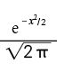
它的图像（如下图所示）可能是统计学中最重要的图像。

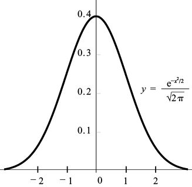
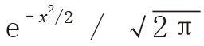
在第8章，我们还发现n!的斯特林公式中也有e的身影：
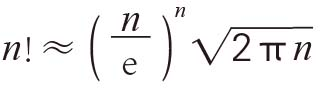
在第11章，我们将发现e与阶乘之间有着极为重要的联系，我们也将证明ex是无穷级数：
ex = 1 +
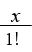
+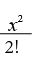
+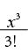
+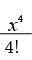
+ …具体来说，当 x = 1时，从上述公式可以得到：
e = 1 +1 +
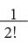
+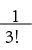
+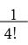
…据此我们可以迅速算出e的数值。
顺便告诉大家，e的小数点后的几位数出现了循环现象：
e = 2.718 281 828…
我的中学老师说：“2.7安德鲁·杰克逊，安德鲁·杰克逊。”这是因为安德鲁·杰克逊于1828年当选美国第7任总统。（我的记忆方法则正好相反，我是利用e的数值来记忆安德鲁·杰克逊当选美国总统的年份的。）你也许认为e是一个有理数，如果1828这几个数字一直循环，那么e确实是有理数，但真实情况并非如此。之后的6个数字是 …459 045…。对于这几个数字，我是借助等腰直角三角形的内角度数来记忆的。
你也许根本想不到，e还会出现在很多概率问题中。例如，假设你每周都会买彩票，中奖概率是1%。如果你连续100周买彩票，那么至少有一次中奖的概率是多少？每周中奖的概率是1/100 = 0.01，没中奖的概率是99/100 = 0.99。由于每周的中奖概率与之前的情况无关，因此，连续100周都没有中奖的概率是：
(0.99)100 ≈ 0.366 0
这个数字非常接近1 / e ≈ 0.367 879 4…，这个结果并不是巧合。大家不妨回想一下我们第一次接触ex 时谈及的指数公式：
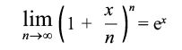
如果令 x = –1，那么对于任意大数n，都有：
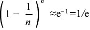
当n = 100时，(0.99)100 ≈ 1 / e，与前面的结果一致。因此，中奖概率约为1 – (1 / e) ≈ 64%。
我最喜欢的一个概率问题叫作“匹配问题”（亦称“帽子保管问题”或“错排问题”）。假设有n份作业要发给n个同学，但是老师比较懒惰，给每名学生随机发了一份作业（这份作业可能是这名学生的，也可能是班上其他同学的）。所有学生都没有拿到自己作业的概率是多少？或者说，如果数字1~n被随机打乱，所有数字都不在它原来位置上的概率是多少？例如，如果 n = 3，那么数字1、2、3有3! = 6种排列方式，所有数字都不在原来位置上的情况有两种，即231和312。也就是说，当 n = 3时，错排的概率是2 / 6 = 1 / 3。
发n份作业共有n! 种发作业方式。令 Dn 表示错排的种数，那么所有人都没有拿到自己作业的概率是 pn = Dn / n!。例如，如果 n = 4，就会有9种错排方式：
2143 2341 2413 3142 3412 3421 4123 4312 4321
如下表所示，p4 = D4 / 4! = 9 / 24 = 0.375。
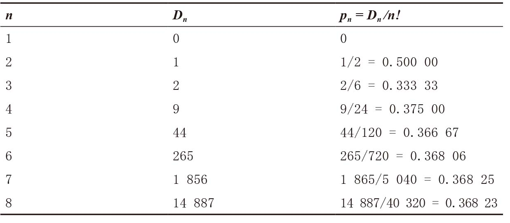
随着n不断增大，pn 逐渐向1 / e靠拢。这个现象有一个令人吃惊的意义，即无论这个班上有10名、100名还是100万名学生，所有人都没有拿到自己作业的概率也不会发生太大变化，都与1 / e非常接近。
为什么呢？因为在有n名学生时，每名学生拿回自己作业的概率是1 / n，拿到其他人作业的概率是1 – (1 / n)。也就是说，n名学生都拿不到自己作业的概率为：
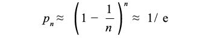
这个概率是一个近似值，原因在于它不是独立事件，与彩票的中奖概率问题不同。如果第一个学生拿到的是自己的作业，那么第二个学生拿回自己作业的概率就会略有增加。[概率不再是1 / n，而是1 / (n –1)。]同样，如果第一个学生拿到的不是自己的作业，那么第二个学生拿回自己作业的概率就会略微减小。不过，由于概率变化的幅度不大，因此逼近效果很明显。
计算概率 pn 的精确值需要使用ex 的无穷级数展开式：
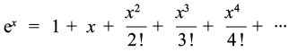
把 x = –1代入方程式，就会得到：
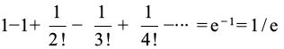
可以证明，如果有n名学生，所有人都没有拿到自己作业的确切概率是：
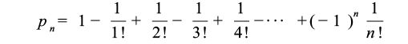
例如，如果有 n = 4名学生，那么pn = 1 –1 + 1/2 – 1/6 + 1/24 = 9/24，这同前面的证明结果一致。pn 向1 / e逼近的速度非常快，两者之间的距离小于1 / (n + 1)!。也就是说，p4 与1 / e的距离小于1 / 5! = 0.008 3；p10 与1 / e的前7位数字都相同；p100 与1 / e相同的数字超过150个！
定理：数字e是无理数。
证明：假设e不是无理数，而是有理数，就存在正整数m、n，满足e = m / n。接下来，用整数 n 将e的无穷级数展开式分成两个部分L和R，即e = L + R，其中：
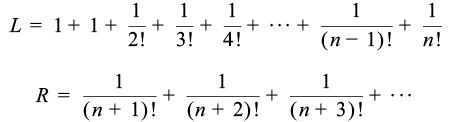
注意，n! e = en (n – 1)! = m (n – 1)! 肯定是一个整数[因为 m 和 (n– 1)! 都是整数]，n! L 也是一个整数（因为只要 k G n，n! / k! 就一定是一个整数）。也就是说，n! R = n! e – n! L 是两个整数的差，因此，它肯定是整数。但这个结果是不可能的，因为当n H1时：
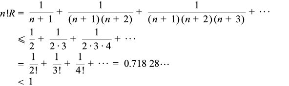
由于不存在小于1的正整数，所以 n! R 不可能是整数。也就是说，假设e = m / n会导致自相矛盾的结果，从而证明e是无理数。 □